O sistema respiratório é responsável pela captação do oxigênio (O2) liberação do gás carbônico (CO2) por meio das respirações (trocas gasosas); a respiração externa é a troca gasosa entre os alvéolos dos pulmões com os capilares sanguíneos e a respiração interna, entre os capilares e o meio celular.
Os órgãos do sistema respiratório podem ser divididos anatomicamente:
Vias aéreas / respiratórias superiores – são os órgãos localizados na cabeça (nariz, cavidade nasal e faringe).
Vias aéreas / respiratórias inferiores – são os órgãos localizados do pescoço para baixo (laringe, traquéia, brônquios e pulmões).
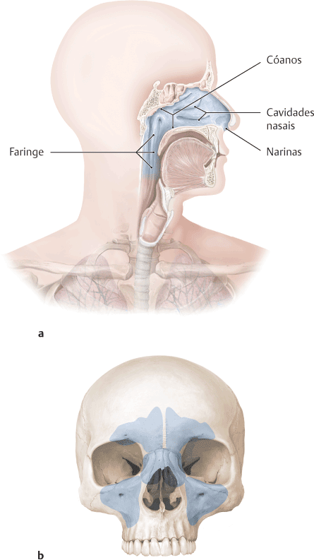
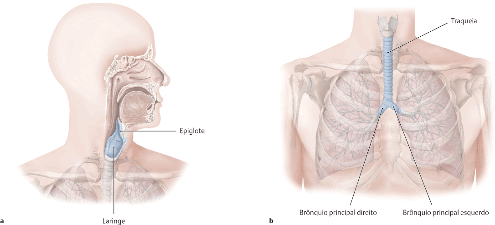
O nariz é o primeiro órgão do sistema respiratório, está localizado no centro da face e é formado por osso (nasal e maxila) e cartilagens (como a alar).
O ponto superior do nariz, onde este emerge da face, é a raiz deste órgão que se estende ao longo do dorso do nariz até seu ápice.
Inferiormente, na base do nariz localizam-se dois orifícios denominados de narinas, são separadas pelo septo nasal (junção da lâminar perpendicular do etmóide + osso vômer) que se estende até o final da cavidade nasal dividindo estes dois primeiros órgãos em lados direito e esquerdo.
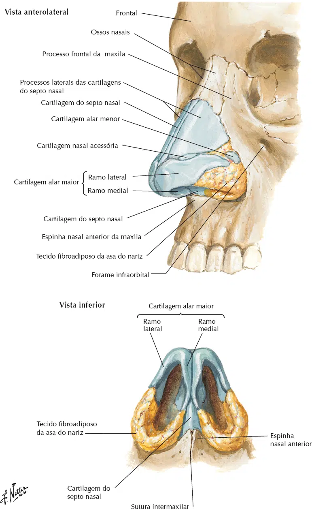
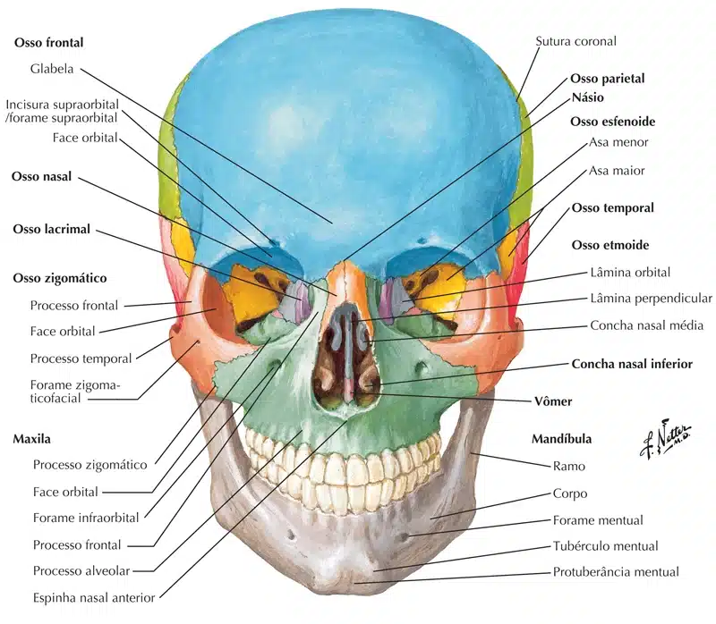
Esta cavidade inicia-se logo após o nariz, também é dividida pelo septo nasal e possui uma grande quantidade de mucosa revestindo seu interior.
A cavidade nasal da passagem para o ar do nariz até a faringe, mas também é importante porque conecta-se com os seios paranasais (da face) levando até estes espaços aéreos o ar que inspiramos.
No interior da cavidade nasal existem três projeções laterais de ambos os lados que são as conchas nasais (superior, média e inferior), estas conchas tem a função de restringir a passagem do ar e fazer com que este entre em contato com uma maior superfície de mucosa.
No interior das conchas nasais superior e média encontramos o inicio do nervo olfatório, responsável pela captação dos estímulos químicos dos diferentes odores.
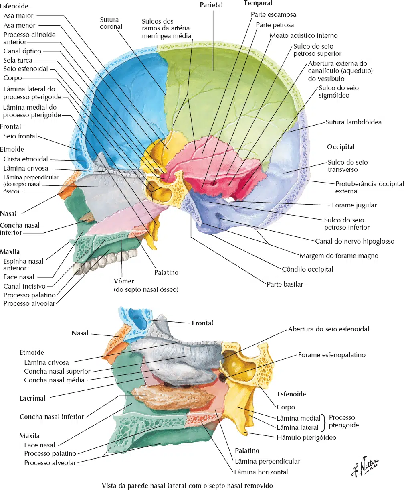
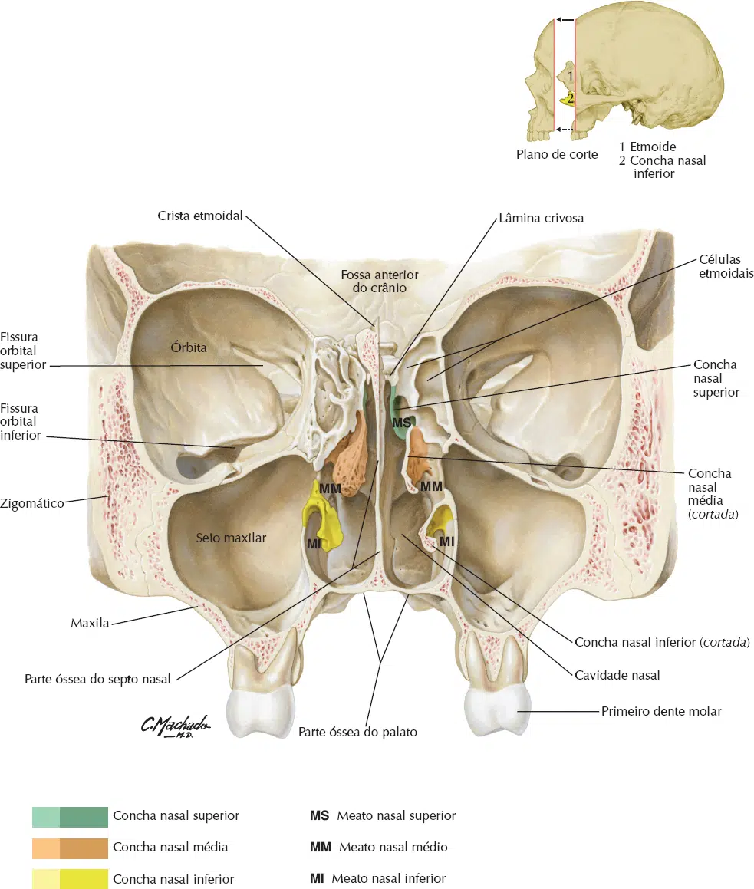
São ossos que situam-se em volta da cavidade nasal e possuem cavidades aéreas no seu interior.
Estas cavidades são revestidas por mucosa respiratória e funcionam como uma extensão da cavidade nasal.
São eles:
Seio frontal
Seio da maxila
Seio do esfenóide
Seio do etmóide (células etmoidais).
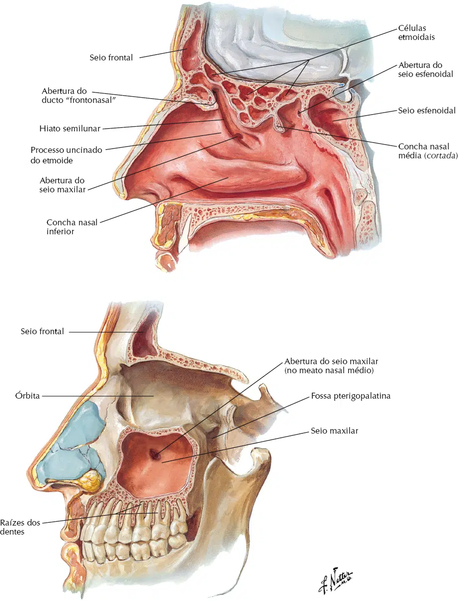
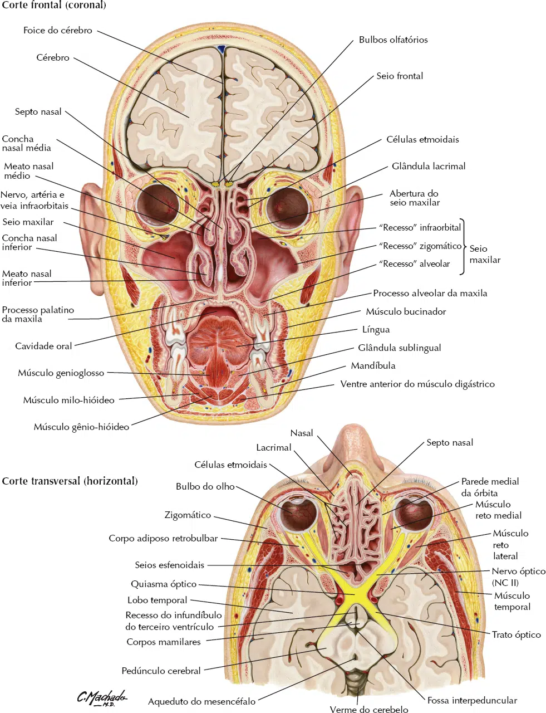
A laringe é um órgão curto que conecta a faringe com a traquéia.
Ela se situa na linha mediana do pescoço, diante das quarta, quinta e sexta vértebras cervicais.
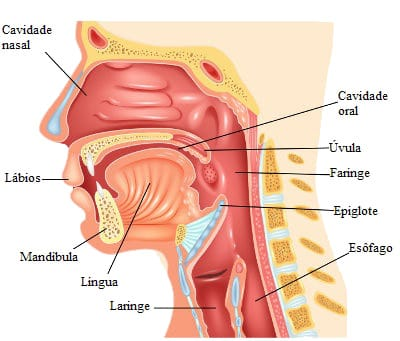
Três ímpares:
Tireóide;
Epiglote;
E cricóide.
Três pares:
Aritenóides;
Corniculadas;
e Cuneiformes.
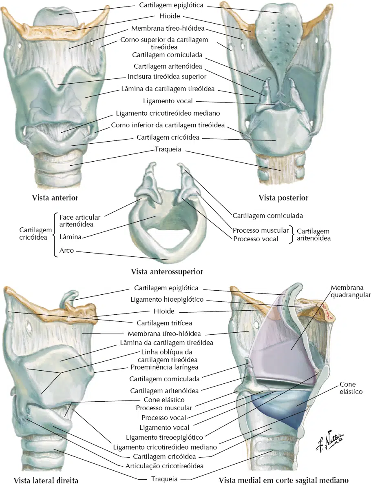
A cartilagem tireóide consiste de cartilagem hialina e forma a parede anterior e lateral da laringe, é maior nos homens devido à influência dos hormônios durante a fase da puberdade.
A cartilagem cricóide localiza-se logo abaixo da cartilagem tireóide e antecede a traquéia.
A epiglote se fixa no osso hióide e na cartilagem tireóide, esta cartilagem é uma espécie de válvula para via aérea inferior, onde permite apenas a passagem do ar ou substâncias gasosas para a laringe.
No interior da laringe, lateralmente, podemos observar duas projeções em ambos os lados; uma superior denominada prega vestibular e outra inferior, a prega vocal.
Esta última vibra com a passagem do ar e produz o som (fonação).
O local de passagem do ar entre as pregas vocais é chamado de glote.
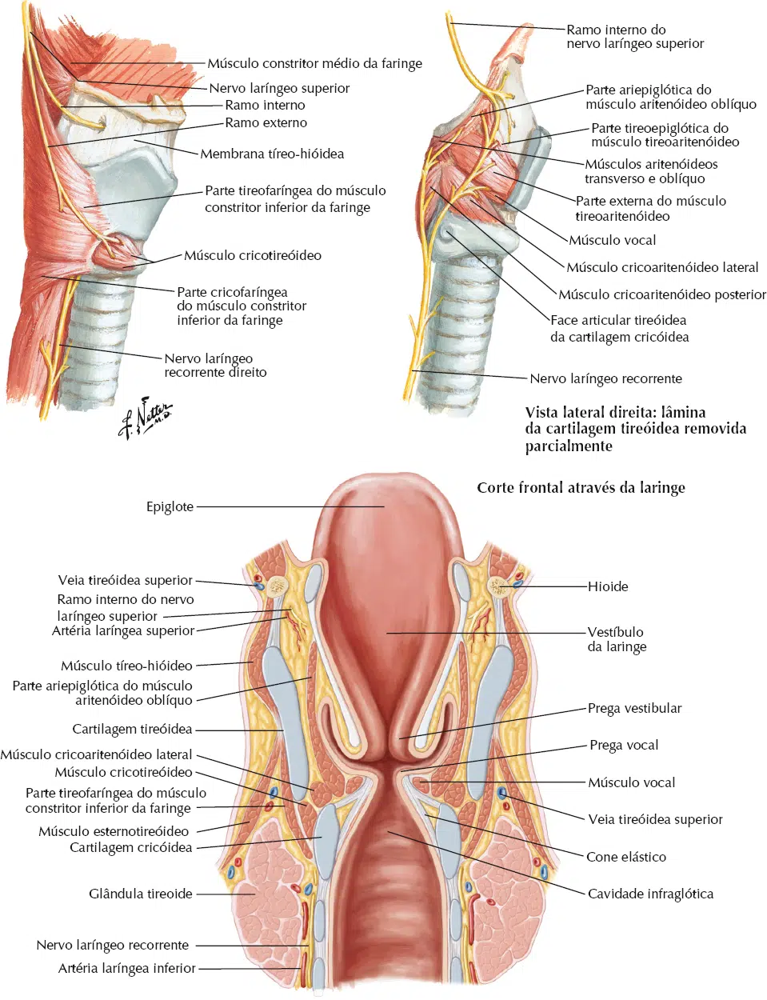
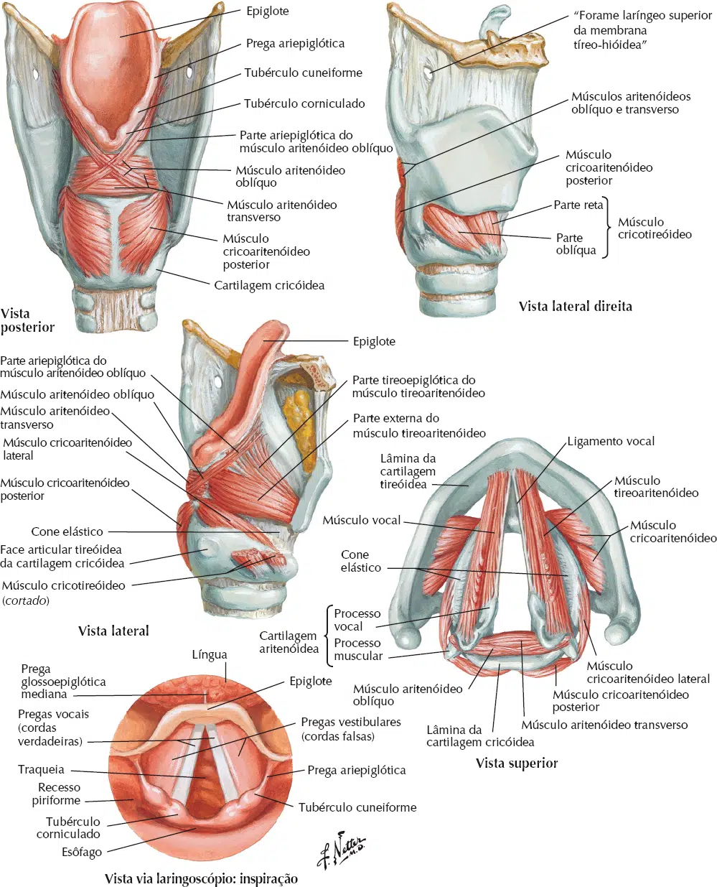
As cartilagens aritenóides ou aritenóideas são um par de pequenas pirâmides de cartilagem que fazem parte da laringe.
Nestas cartilagens as cordas vocais são anexadas.
Possui três ângulos, são eles:
Ângulo anterior – Processo vocal;
Ângulo póstero-lateral – Processo muscular;
Ângulo póstero- mediano – (Não possuí nome).
As cartilagens corniculadas situam-se acima da cartilagem aritenoide.
Corniculada vem de corniculatum (= que tem um pequeno chifre).
As cartilagens cuneiformes fazem parte do esqueleto da laringe, sendo duas pequenas peças alongadas de cartilagem amarela elástica, dispostas uma em cada lado da entrada da laringe, chamada de ádito.
A traquéia constitui um tubo que faz continuação à laringe, penetra no tórax e termina se bifurcando nos 2 brônquios principais.
Ela se situa medianamente e anterior ao esôfago, e apenas na sua terminação, desvia-se ligeiramente para a direita.
O arcabouço da traquéia é constituído aproximadamente por 20 anéis cartilagíneos incompletos, que são denominados cartilagens traqueais.
A parede posterior da traquéia é formada pelo músculo traqueal (liso), o que facilita a passagem do bolo alimentar pelo esôfago que localiza-se posteriormente à traquéia.
Internamente a traquéia é forrada por mucosa, onde abundam glândulas, e o epitélio é ciliado, facilitando a expulsão de mucosidades e corpos estranhos.
Inferiormente a traquéia se bifurca, dando origem aos 2 brônquios principais: direito e esquerdo.
A parte inferior da junção dos brônquios principais, internamente, é ocupada por uma saliência ântero-posterior que recebe o nome de carina da traquéia, local repleto de receptores que quando estimulados provocam a tosse.
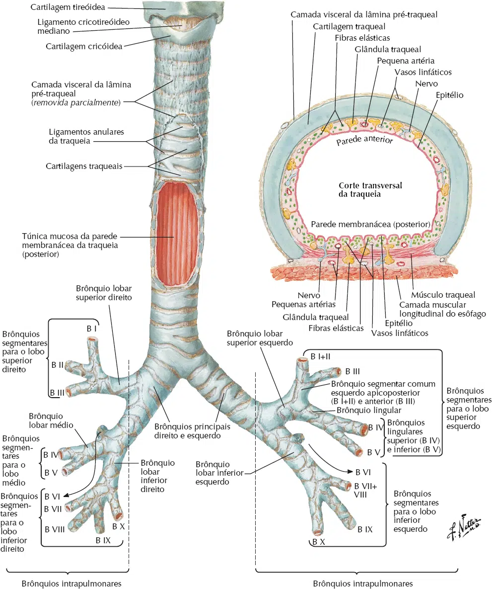
Próximo ao centro da cavidade torácica a traqueia bifurca-se em brônquio principal direito e brônquio principal esquerdo.
Os brônquios principais fazem a ligação da traquéia com os pulmões.
O brônquio principal direito aproxima-se da direção da traquéia, isto é, é menos oblíquo (mais verticalizado), mais curto e mais grosso que o esquerdo.
Ao atingirem os pulmões correspondentes, os brônquios principais subdividem-se nos brônquios lobares, dos quais cada um dirige-se para um lobo pulmonar, por isso o brônquio principal direito origina três brônquios lobares (superior, médio e inferior) enquanto que o esquerdo apenas dois (superior e inferior) isso porque o pulmão direito possui três lobos e o esquerdo apenas dois.
Os brônquios lobares subdividem-se em brônquios segmentares.
Cada um destes distribuindo-se a um segmento pulmonar, uma média de 10 segmentos em cada pulmão.
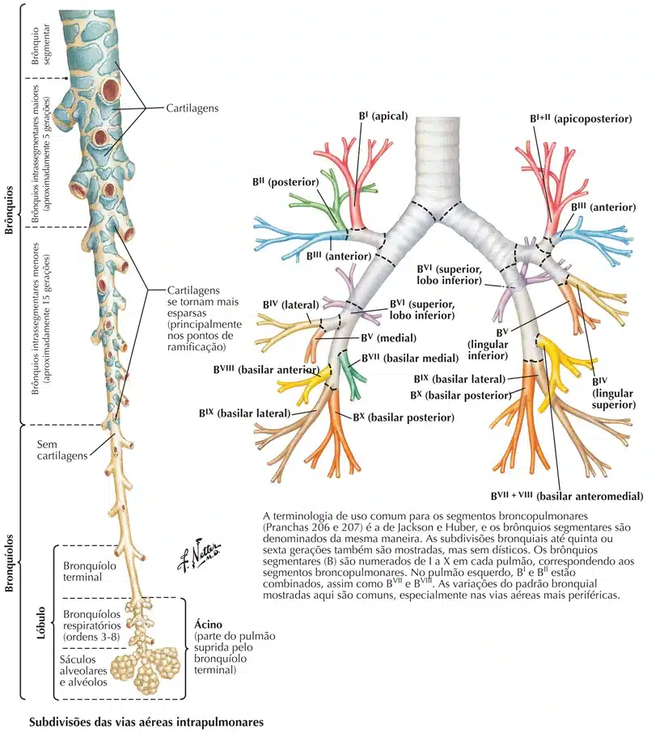
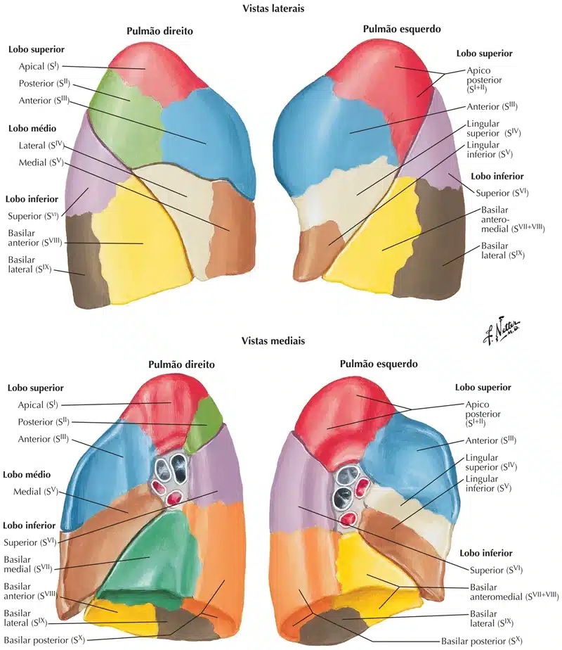
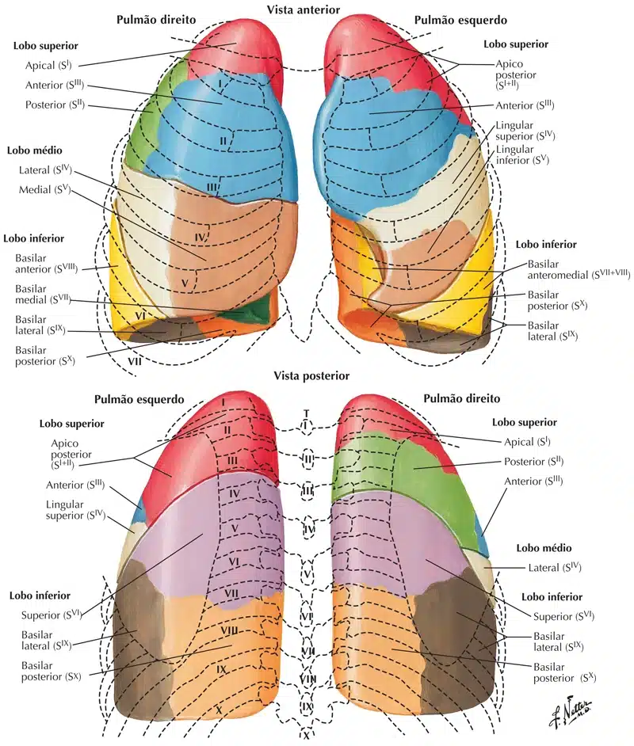
Os alvéolos pulmonares são minúsculos sacos aéreos, presentes nos pulmões, envolvidos por capilares sanguíneos e uma fina membrana.
Situam-se onde terminam as finas ramificações dos brônquios.
Os alvéolos podem se apresentar isolados ou em grupos, formando os chamados sacos alveolares.
Em cada pulmão existem milhões alvéolos.
São responsáveis pelo aspecto esponjoso dos pulmões.
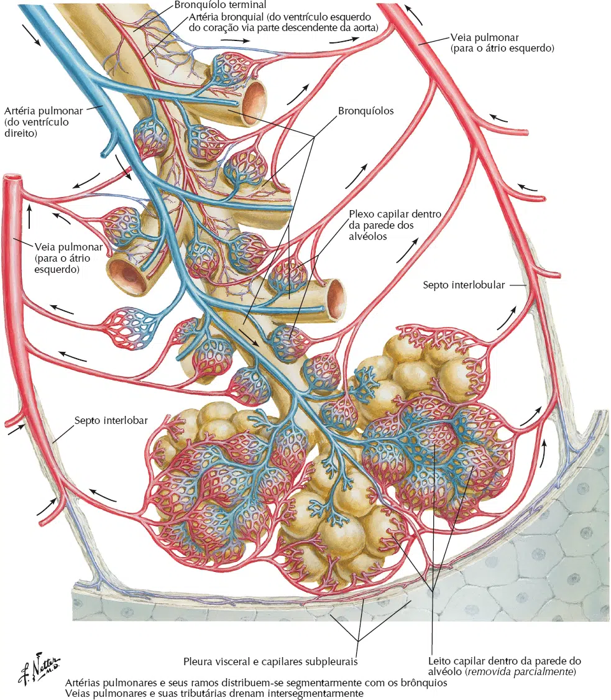
Os alvéolos são revestidos por uma camada de células epiteliais, denominadas de pneumócito tipo I e pneumócito tipo II.
Os pneumócitos tipo I são células pavimentosas, com pequena quantidade de citoplasma.
Essa característica facilita a passagem de gases.
Os pneumócitos tipo II são células ovais e volumosas.
Esse tipo de célula produz uma secreção lipoproteica, chamada de surfactante.
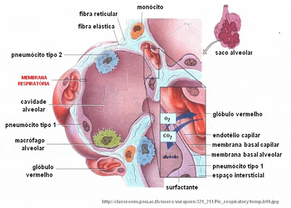
Os pulmões são duas vísceras situadas uma de cada lado, no interior do tórax e onde se dá o encontro do ar atmosférico com o sangue circulante, ocorrendo então, as trocas gasosas (Hematose).
Eles estendem-se do diafragma até um pouco acima das clavículas e estão justapostos às costelas.
O pulmão direito é o mais espesso e mais largo que o esquerdo.
Ele também é um pouco mais curto pois o diafragma é mais alto no lado direito para acomodar o fígado.
O pulmão esquerdo tem uma concavidade que é a incisura cardíaca.
Cada pulmão têm uma forma que lembra uma pirâmide com um ápice, uma base e três faces:
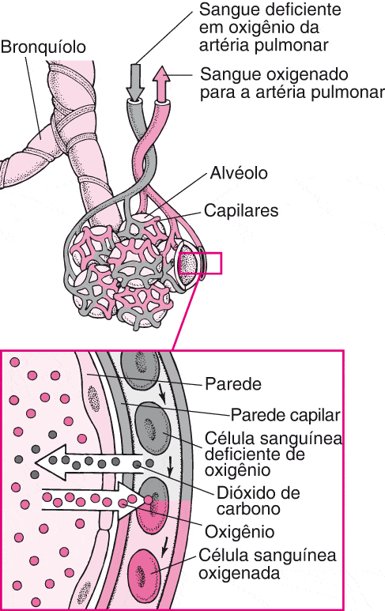
a) Face costal: é a face relativamente lisa e convexa, voltada para a superfície interna da cavidade torácica.
b) Face Diafragmática (face inferior): é a face côncava que assenta sobre a cúpula diafragmática.
c) Face Mediastinal (face medial): é a face onde os pulmões “se olham”, na face mediastinal encontra-se o hilo pulmonar, local onde esta localizada a raiz pulmonar.
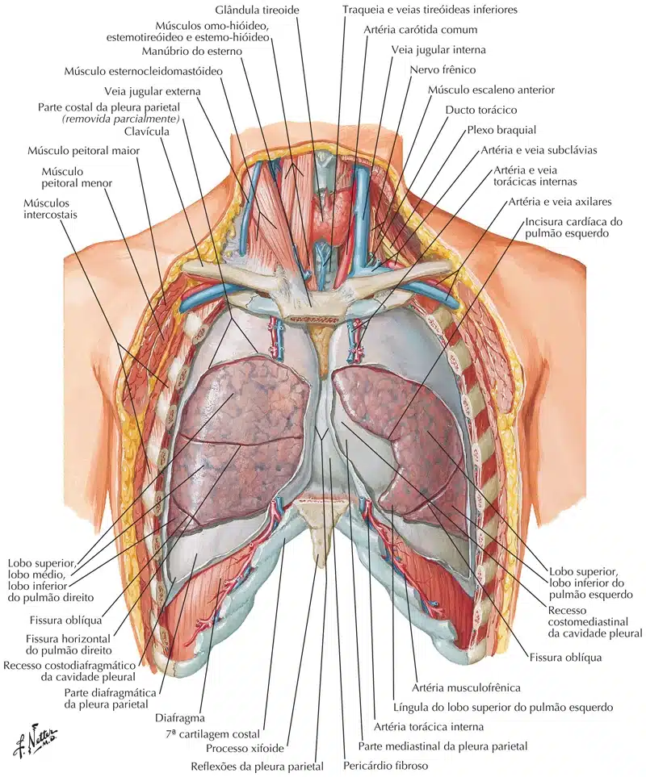
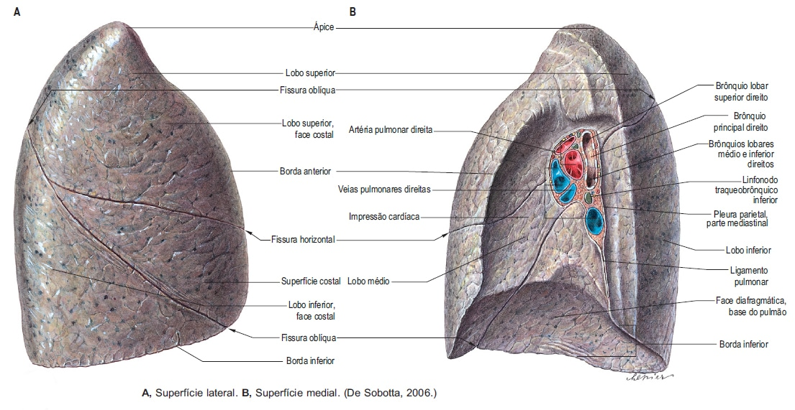
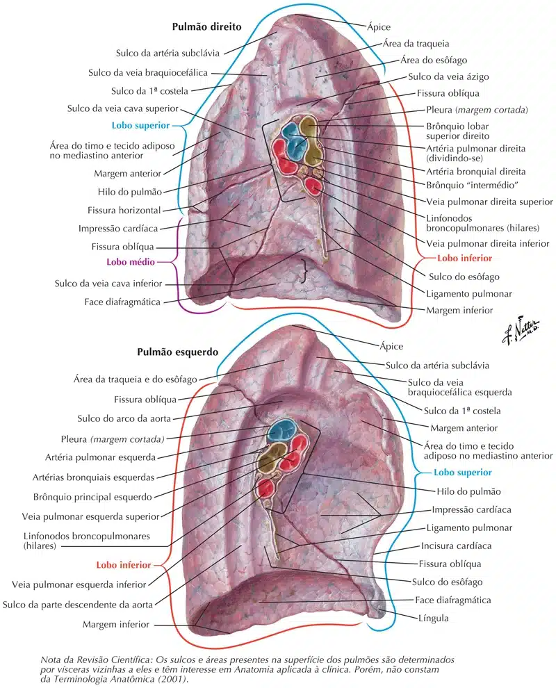
Os pulmões apresentam características morfológicas diferentes.
O pulmão direito apresenta-se constituído por três lobos (superior, médio e inferior) divididos por duas fissuras.
Uma fissura oblíqua que separa lobo inferior dos lobos médio e superior e uma fissura horizontal, que separa o lobo superior do lobo médio.
O pulmão esquerdo é dividido em dois lobos (superior e inferior) por uma fissura oblíqua.
Anteriormente e inferiormente o lobo superior do pulmão esquerdo apresenta uma estrutura que representa o que seria o “seu lobo médio“, a língula do pulmão.
Cada lobo pulmonar é subdividido em segmentos pulmonares, que constituem unidades pulmonares completas, consideradas independentes sob o ponto de vista anatômico.
A raiz do pulmão é composta pela artéria pulmonar, veias pulmonares, brônquios principais além de uma grande quantidade de nervos e linfáticos.
É uma membrana serosa de dupla camada que envolve e reveste cada pulmão e o interior da parede torácica.
A camada mais externa, chamada de pleura parietal é aderida à parede da cavidade torácica e ao diafragma, esta pleura reflete-se na região do hilo pulmonar e retorna revestindo o pulmão para formar a pleura visceral.
A camada interna, a pleura visceral reveste os próprios pulmões (adere-se intimamente à superfície do pulmão e penetra nas fissuras entre os lobos).
Entre as pleuras há um pequeno espaço, a cavidade ou espaço pleural, que contém líquido lubrificante secretado pela pleura.
Este líquido reduz o atrito entre as camadas durante a respiração.